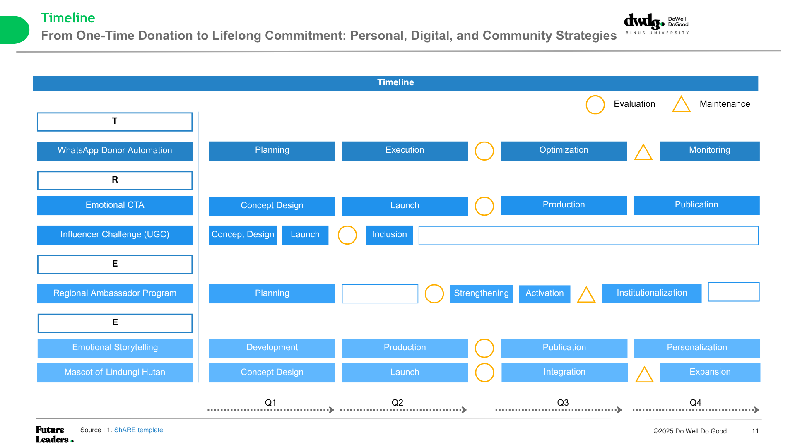
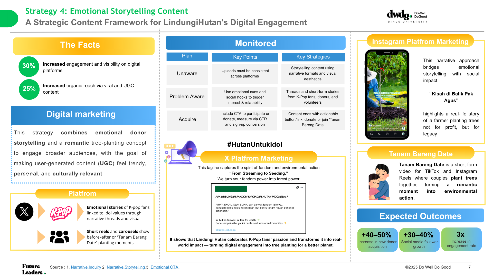
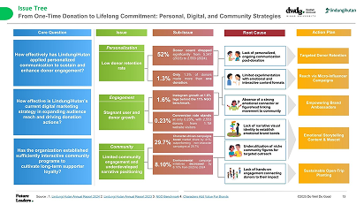
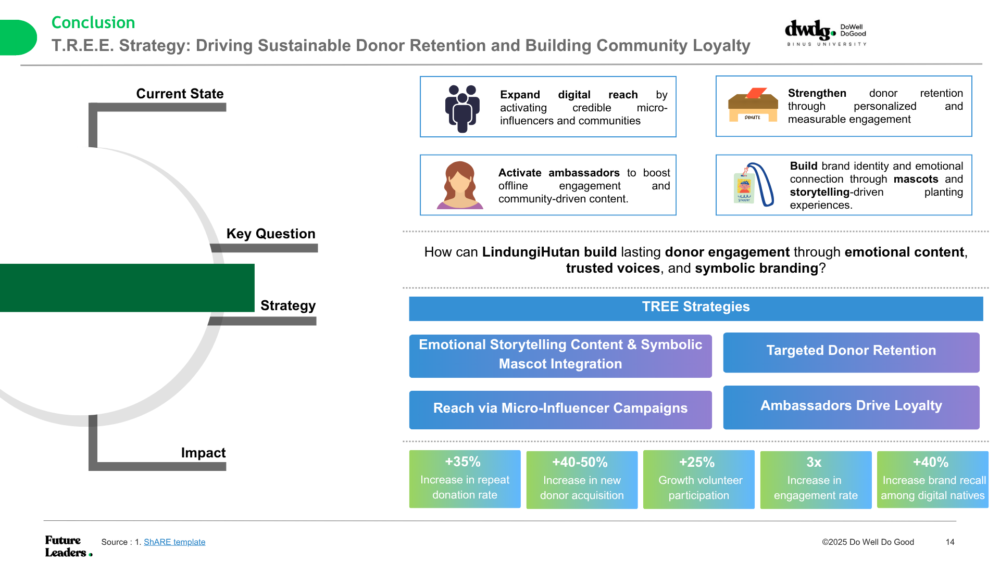

Project Description
This project was a consulting collaboration between our organization, DWDG and our client to address donor engagement and retention issues. We examined the problem and proposed strategies combining gamification and storytelling to improve interaction. My main role was to design the timeline and strategies, focusing on storytelling to build stronger emotional connections. The project concluded with a presentation to the LindungiHutan CEO, strengthening my abilities in structured analysis and strategy development.



